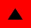

"Commander X" est un informateur anonyme se d�clarant comme un membre officiel haut-plac� du Renseignement
Militaire (ce qui fut confirm� par Timothy Green Beckley, qui publia
certaines des r�v�lations de cet homme et connait sa v�ritable identit�).
Commander X a d�clar� le tout premier contact avec une race extra-terrestre eu lieu dans les ann�es 1930s, qu'il
impliqua des membres du gouvernement li�s � l'Ordre d'Illuminati, et
que ce contact eu lieu, non pas avec une race extra-terrestre, mais avec une race souterraine.
L'informateur myst�rieux Commandant X a fourni les informations suivantes dans l'un de ses rapports :
Dans l'�dition revue et corrig�e de du document intitul� Effets des Armes Atomiques,
pr�par� pour et en coop�ration avec le DoD et l'AEC, sous la direction du LANL, on
pouvait lire que le placement totalement souterrain
des bases est souhaitable et � la page 382 que il n'y a apparemment aucune difficult� fondamentale �
construire et g�rer sous terre divers types de complexes importants. De tels complexes peuvent �tre install�s au
sein de mines existantes adapt�es ou dans des sites creus�s sp�cialement � cet effet.
A propos de la Force Delta qui fournirait la s�curit� pour les projets
d'un niveau de confidentialit� sup�rieur � Top Secret impliquant des "interactions" avec les extra-terrestres (gris,
etc.), celui qui se pr�sente comme "l'informateur du gouvernement" indique ce qui suit :
Le Groupe Delta... a �t� observ� (au sein de l'Activit� de
Support des Renseignements) portant des badges repr�sentant un triangle noir sur fond rouge.
Delta
est la 4�me lettre de l'alphabet Grec. Elle a la forme d'un triangle, et repr�sente de mani�re �vidente
certains signes ma�onniques.
Chaque base poss�de son propre symbole. Celui de la base de Dulce est un triangle avec la lettre Grecque "Tau" (T) � l'int�rieur,
mais invers�, de fa�on � ce que le triangle pointe vers le bas.